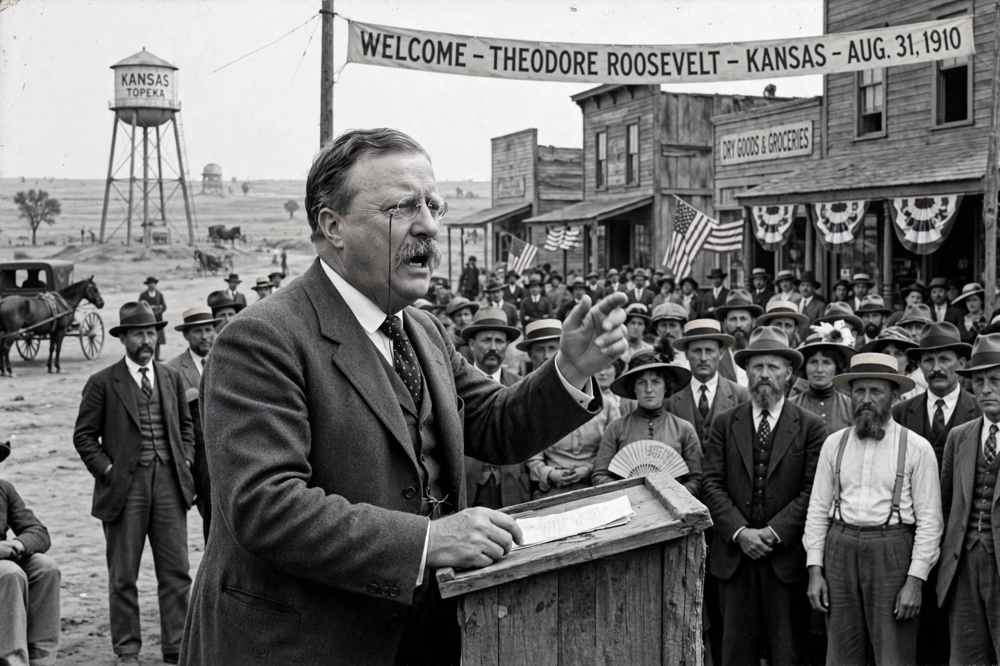

| New Nationalism | |
|---|---|
| Proponent | Theodore Roosevelt |
| Key speech | Osawatomie, Kansas, 31 August 1910 |
| Key ideas | Strong federal regulation, social welfare, conservation, graduated income tax, inheritance tax |
| Later vehicle | Progressive Party (1912) |
New Nationalism was a political program advanced by former United States President Theodore Roosevelt in a speech delivered at Osawatomie, Kansas, on 31 August 1910. The program marked Roosevelt's break with the more conservative policies of his successor, William Howard Taft, and became the centerpiece of his campaign for the presidency in 1912 as the candidate of the Progressive Party.
Roosevelt delivered the address at the dedication of the John Brown Memorial Park in Osawatomie. In it he argued that the United States faced a conflict between the interests of concentrated wealth and the welfare of the people as a whole. He declared that the essence of the struggle was "to determine whether the whole American people, by means of their government, shall exercise control over the new industrial modern combinations, or whether these combinations shall exercise control over the government."
The New Nationalism called for a strong national government to regulate corporations and protect social welfare. Its principal planks included:
In the election of 1912, Democrat Woodrow Wilson's program, the New Freedom, opposed Roosevelt's approach. Where Roosevelt accepted large corporations as inevitable and sought to regulate them through a powerful federal state, Wilson argued for restoring competition by breaking up trusts and reducing government intervention. Wilson won the election, and many New Nationalism proposals were later enacted piecemeal during the twentieth century.
Historians regard the New Nationalism as an important precursor of later reform programs, including Franklin D. Roosevelt's New Deal. The phrase was revived periodically in American politics, including by Herbert Croly, whose 1909 book The Promise of American Life had helped inspire Roosevelt's program.
See also: Progressive Era, Square Deal, Bull Moose Party